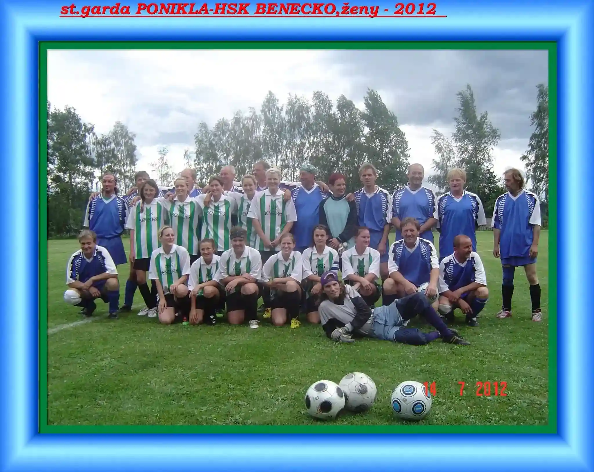
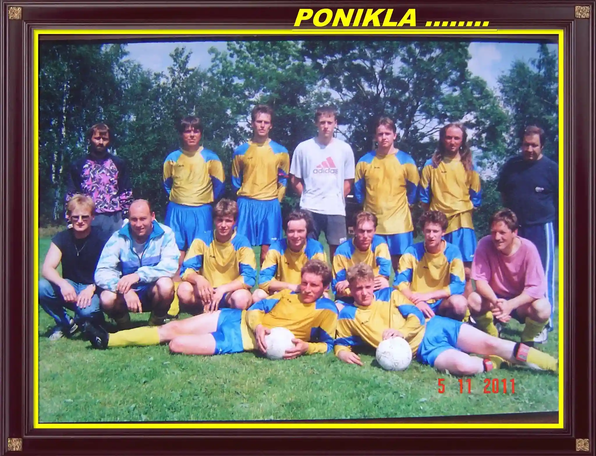
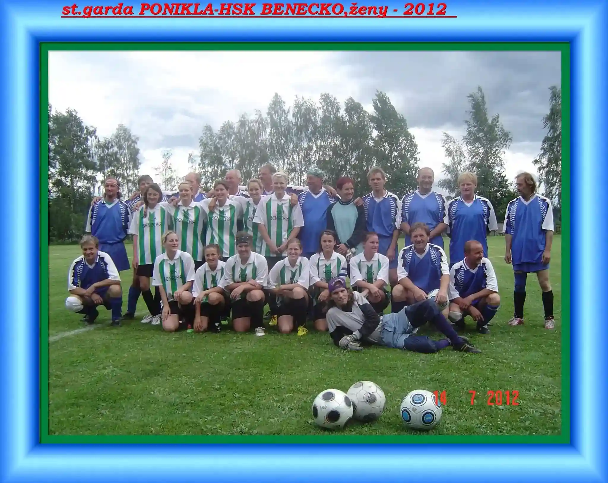
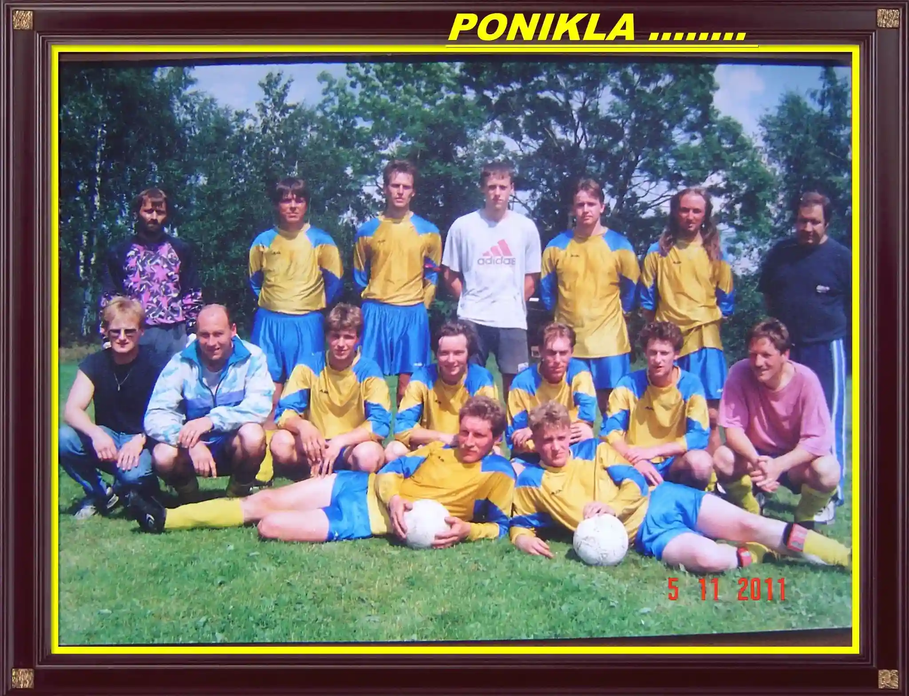

Fotbalový klub TJ Poniklá byl založen v roce 1923 jako amatérský tým nadšenců. První zápasy se hrály na provizorním hřišti a klub se postupně rozrůstal.
Během let se klub posunul do vyšších soutěží, přičemž největšího rozmachu dosáhl v 70. letech, kdy se dostal do krajské ligy. Bylo postaveno nové zázemí a klub získal širší fanouškovskou základnu.
Dnes je TJ Poniklá stabilním klubem s mládežnickými týmy a moderním stadionem. Klub se věnuje rozvoji mladých hráčů a pravidelně se účastní regionálních turnajů.
 


